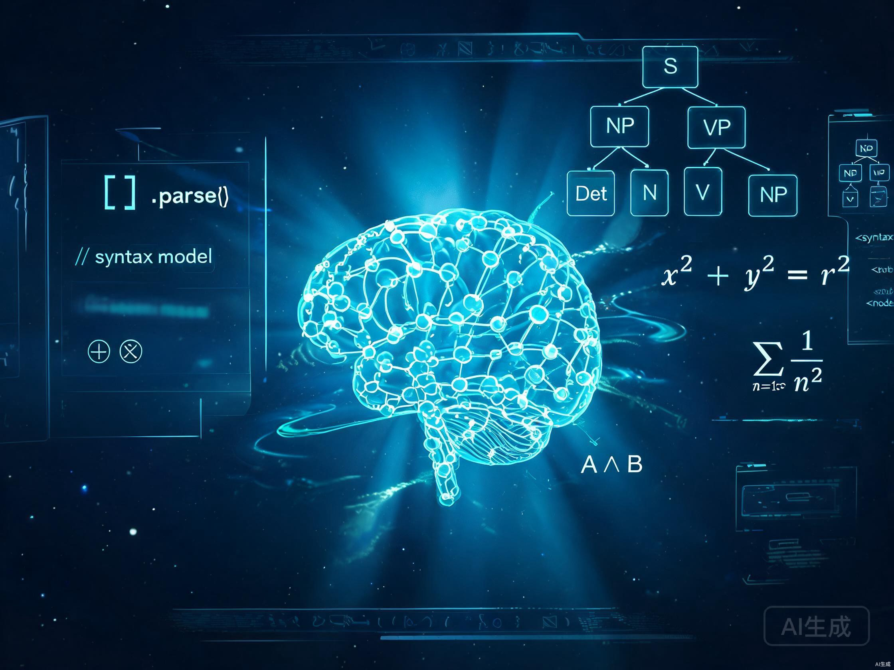

面向理科思维型高中生的 AI 学习调试系统。
观察思维路径，定位推理断点，最小干预修复，迁移验证闭环。我们不教你答案，我们看见你怎么想。

捕获完整思维路径
定位推理断点
最小必要提示
三道迁移验证
更新知识拓扑
长难句公式翻译 · 词根逻辑拆解 · MECE 结构骨架
5Whys 因果链 · 指令流转模拟 · 物理逻辑还原
错题归因 · 错一订三迁移验证 · 逻辑解谜挑战
Bug 错误档案 · 修复日志 · 可复用逻辑组件库
节点状态 · 依赖关系 · 掌握度可视化
自适应调度 · 状态感知 · 下一步智能推荐